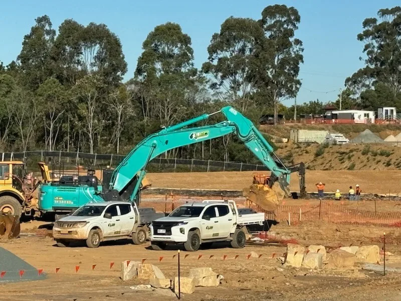
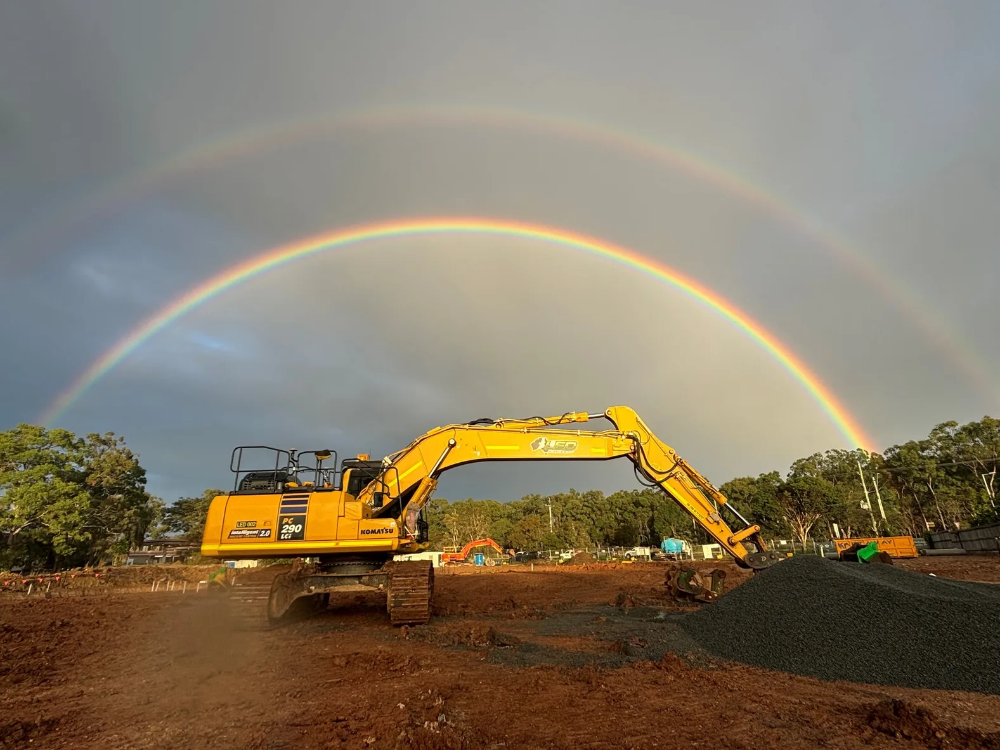
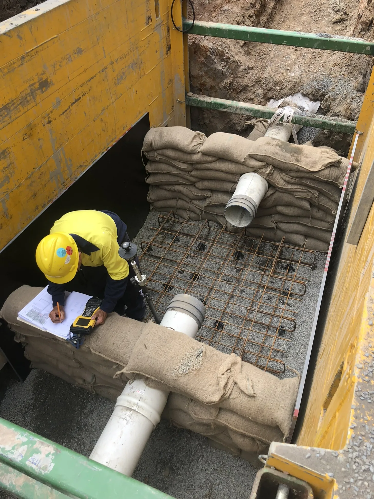
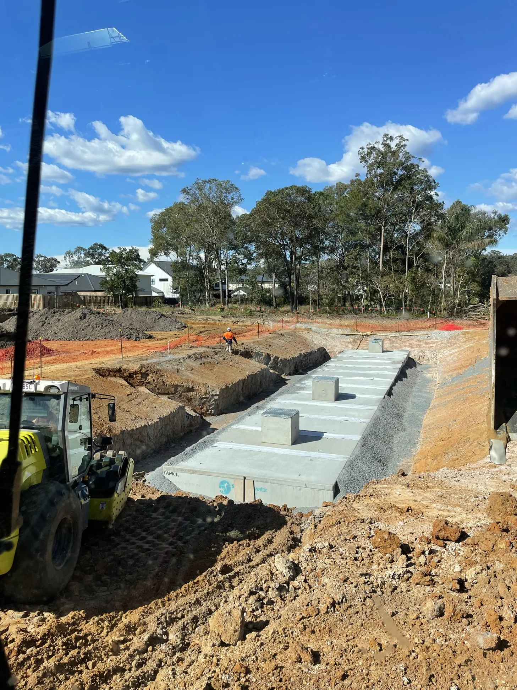

Bulk earthworks and detailed site preparation
Bulk earthworks, site preparation, trimming and detailed excavation including GPS-enabled delivery for exact grades and structural tolerances.
What we do
Civil works, underground service installation and plant hire combine to support dependable project delivery.
Bulk earthworks, site preparation, trimming and detailed excavation including GPS-enabled delivery for exact grades and structural tolerances.
Stormwater, sewer and water-main installations supported by disciplined trenching, pit construction, drainage works, kerb and channel, and compliant reinstatement.
Reliable wet and dry hire of excavators, posi-tracks, moxis and support equipment backed by experienced operators and maintained plant.

Who we are
With extensive industry experience, LED Plant & Civil has supported major principal civil contractors on a diverse range of infrastructure projects.
In addition to the company’s proven capability, LED benefits from the leadership of Director and Operations Manager Nick Murphy and Superintendent John Finnegan, both well respected for dependable delivery, project management and safe operational leadership.
Recognised for getting the job done right the first time, ahead of schedule and with complete safety and transparency.
Brings dependable operational leadership and a strong reputation for delivering complex works efficiently and safely.
Featured projects



Why LED
LED’s proof points come from operational capability, maintained plant, experienced leadership and disciplined systems.
Structured around civil works, underground services and detailed excavation with GPS-based control.
Plant hire and site delivery backed by maintained machinery, support equipment and skilled operators.
Dedicated operations leadership across planning, supervision and dependable delivery.
Robust internal systems aligned with best practice and a visible focus on safe, accountable project delivery.
Safety, quality and environment
LED Plant & Civil maintains robust internal systems aligned with industry best practice and is in the process of obtaining ISO 45001, ISO 9001 and ISO 14001 certification.